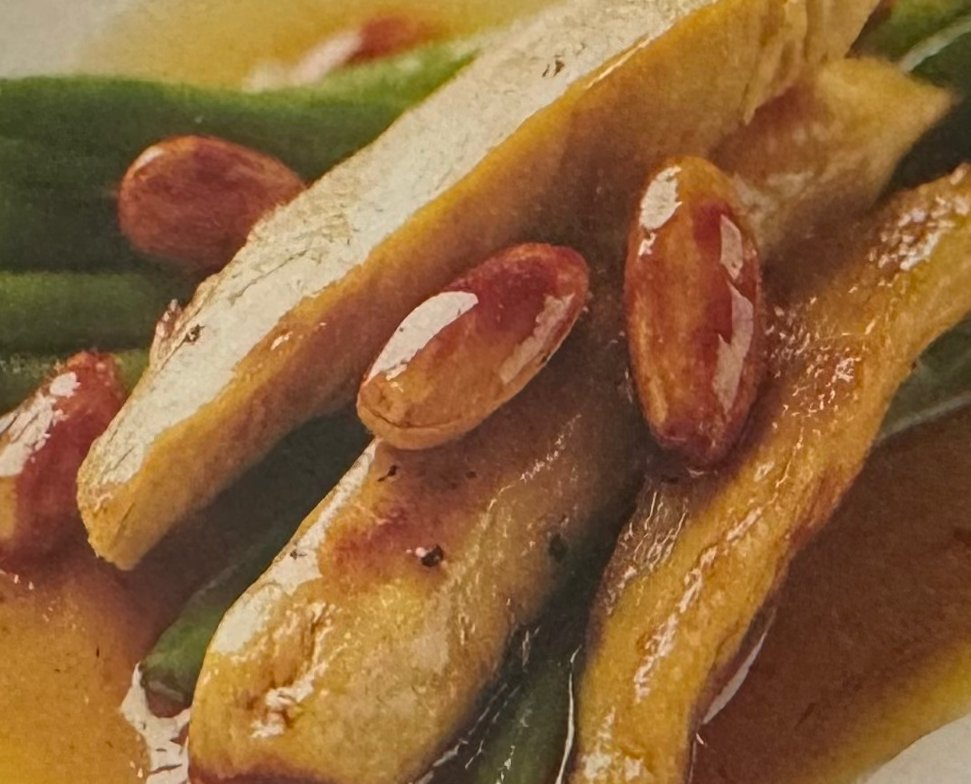

Poulet au miel et haricots verts
Ingredients
4×
- 2 c. à s. d'huile d'olive
- 4 blancs de poulet
- 3 c. à s. de miel
- 3 pincées de cannelle
- 4 c. à s. de vinaigre balsamique
- 0.5 cube de bouillon
- 25 cl d'eau
- 100 g d'amandes entières
- 400 g de haricots verts
- 2 c. à s. de fécule
- sel
- poivre

Préparation
Étape 1
Chauffer 2 c. à s. d'huile d'olive à feu vif dans la cocotte-minute et colorer 4 blancs de poulet. Ajouter 3 c. à s. de miel et 3 pincées de cannelle, laisser caraméliser puis déglacer avec 4 c. à s. de vinaigre balsamique.
Étape 2
Verser 0.5 cube de bouillon dilué dans 25 cl d'eau, ajouter 100 g d'amandes entières et gratter les sucs. Ajouter 400 g de haricots verts.
Étape 3
Fermer la cocotte. Dès que la vapeur s’échappe, baisser le feu et cuire 12min.
Étape 4
Retirer la viande et les haricots. Lier le jus bouillant avec 2 c. à s. de fécule en remuant. Ajouter du sel et du poivre, et servir aussitôt.